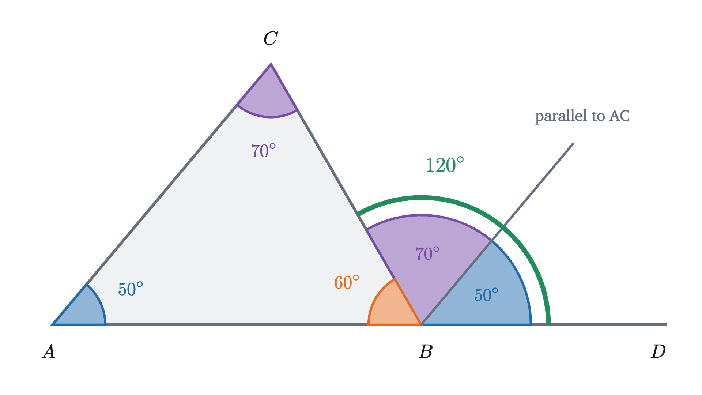
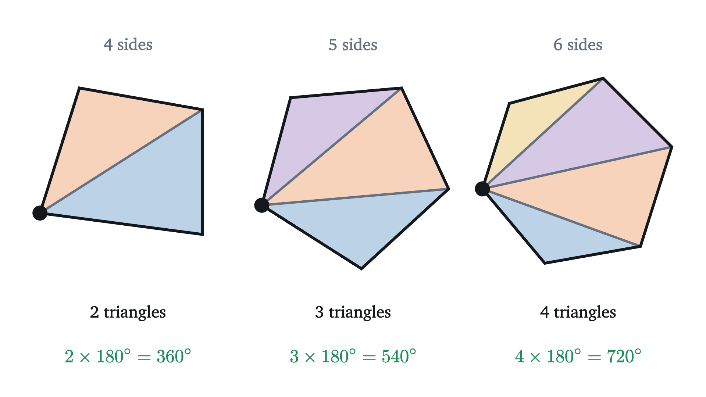
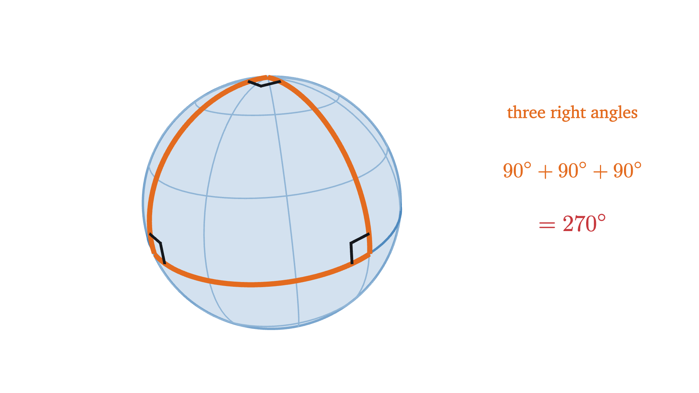
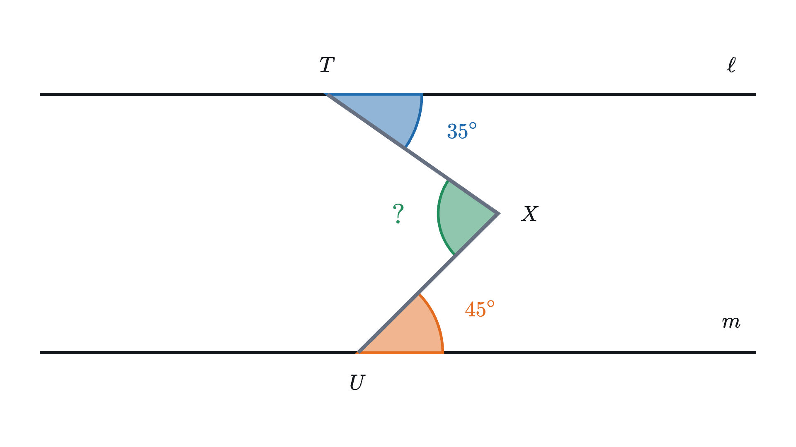
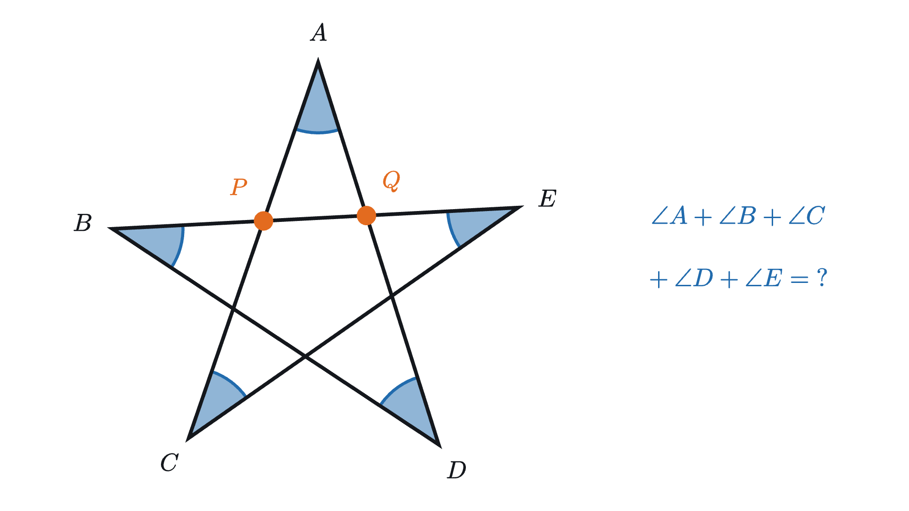

Why the angles of a triangle add to 180°
Tear the corners off any triangle and they line up along a straight edge. A single parallel line explains why, and a sphere shows the line is needed.
Cut any triangle out of paper, tear off its three corners and push the three points together, edge against edge. The outer edges of the pieces form a straight line, as in the animation above, whatever triangle you started with.
Nobody chose those corners to fit together, and changing the shape of the triangle changes all three. So why should they add up to a straight line? And is the line exactly straight, or only so close that torn paper can’t show the difference?
What the experiment shows
Angles are measured in degrees, written °, with a full turn divided into 360 of them. Half a turn is then 180°, the angle along one side of a straight line, and a quarter turn is 90°, a right angle. So the paper experiment says that the three angles of the triangle add to 180°.
The triangle in the animation has angles of 50°, 60° and 70°, and indeed $50 + 60 + 70 = 180$. One triangle proves nothing, so the next figure tries more. The base stays where it is, the top corner moves, and each time the three angles are measured from the drawing and copies of them are laid side by side.
All four sums are 180°. Watch what happens between the steps: when the top corner is pulled down toward the base, the two base angles shrink and the top angle opens by the same amount, so the total stays put.
Why measuring cannot settle the question
Measurement has two weaknesses that no amount of care removes. A protractor reads to about half a degree, and torn paper is worse, so if the true sum were 179.9°, or 180.3° for long thin triangles, our experiments would not notice. And there are infinitely many triangles, of which we have tried four. We want a reason that covers every triangle at once and leaves no room for an error of a tenth of a degree.
Bringing the corners to one place
In the opening animation the corners were carried off to a spare line at the side, a place that has nothing to do with the triangle and so is hard to reason about. It is tidier to leave one corner where it is and bring the other two to it. Name the corners $A$, $B$ and $C$, with $C$ at the top, and keep $C$ fixed. We want a copy of the angle at $A$ to sit at $C$, right beside the angle that is already there, sharing the side $CA$ with it.
Sliding the copy up along the side won’t do, because a slid copy still opens toward the right, the way the original does at $A$, and at $C$ it would sit above the triangle. The copy has to be turned around. The motion that does this is a half turn: a rotation through 180° about some center point. A half turn about a center $M$ sends each point to the point directly opposite it through $M$, at the same distance. If we want $A$ to land on $C$, the center must be the point halfway between them, the midpoint of the side $AC$.
Pause and try
The angle at $A$ has two edges. One runs along the side $AC$, and the other runs along the base, pointing to the right. Give the whole corner a half turn about the midpoint of $AC$. Where does each edge end up, and which way does it point?
Show answerHide answer
The half turn swaps $A$ and $C$, so the edge that ran from $A$ toward $C$ now runs from $C$ toward $A$ and still lies along the side of the triangle. The other edge started at $A$ pointing right, along the base. A half turn reverses every direction, so this edge now starts at $C$ and points left, level with the base but up at the top corner.
Two lines in a plane that never meet are called parallel. A line and its half-turned copy never meet (a property of half turns listed below), so that second edge lies along a line through $C$ parallel to the base. The same thing happens on the other side: a half turn about the midpoint of $BC$ carries the corner at $B$ up to $C$, and its base edge ends up starting at $C$ and pointing right, again along a line through $C$ parallel to the base.
After both half turns three angles sit at $C$, and whether they make a straight line comes down to one question. The edge pointing left and the edge pointing right each lie on a line through $C$ parallel to the base, and we need those to be the same line. If only one line through $C$ is parallel to the base, the two edges are its two halves, and the three angles fill one side of a straight line exactly.
The fact about parallel lines that we need
The step that carried the angle from $A$ to $C$ has nothing to do with triangles, so let us isolate it. Take two parallel lines $\ell$ and $m$, and a third line $t$ that crosses both. The figure below gives the picture a half turn about the point $M$ halfway between the two crossings.
The two angles that end up matched are called alternate angles: they lie between the two parallel lines, at the two crossings, on opposite sides of the crossing line. The proof that they are equal uses three properties of a half turn, which I’ll list first so that nothing is hidden.
The parallel axiom entered the proof at one point, the sentence “there is only one such line”. Without it, $H(\ell)$ and $m$ could be two different parallels through $Q$, and the angles would have no reason to match.
The proof for a triangle
The steps below carry out the plan on the 50°, 60°, 70° triangle. The new line is the one line through $C$ parallel to the base, and each half-turned copy lands against it for the reason just proved.
Here is the same argument written out for an arbitrary triangle.
One kind of step was taken from the picture: the statements about which side of a line a point lies on, and the order of the four rays around $C$. A fully formal treatment derives them from axioms about order, which I omit.
This answers both opening questions. The corners fit because two of them are alternate angles to the pieces of a straight line through the third. And the fit is exact: the proof contains no measurement, so there is no tenth of a degree for an error to hide in.
Besides those facts about order, two things were assumed: the three properties of a half turn, which can be proved without the parallel axiom, and the parallel axiom itself, which cannot be proved from Euclid’s other axioms. The last section shows what happens without it.
Using the theorem
The angle outside a corner
Extend one side of a triangle past a corner. The angle between the extension and the other side at that corner is called an exterior angle of the triangle. The angles inside are interior angles when we need to tell them apart.

In the figure the exterior angle at $B$ is 120°, and the two interior angles away from $B$ are 50° and 70°, which add to 120°. The reason takes one line. The exterior angle and the interior angle at $B$ lie along a straight line, so the exterior angle is $180° - \angle B$. By the theorem, $180° - \angle B$ is also $\angle A + \angle C$.
A second view: walking around the triangle
There is another way to see the number 180, and it explains what happens for shapes with more sides. Imagine walking along the edge of the triangle, counterclockwise, starting in the middle of the base. At each corner you have to turn left to follow the next side. The amount you turn is exactly the exterior angle at that corner: before turning you face along the extension of the side you were on, and after turning you face along the next side.
On the 50°, 60°, 70° triangle the walker turns through $180° - 60° = 120°$ at the first corner, then 110°, then 130°, and the dial fills up completely: $120 + 110 + 130 = 360$. The walker ends the trip facing the way it started, having turned left all the way and never right, so the total turning is one full turn.
This gives the angle sum again. If the interior angles are $\alpha$, $\beta$ and $\gamma$, the three turns are $180° - \alpha$, $180° - \beta$ and $180° - \gamma$, and they total 360°:
The left side is $540° - (\alpha + \beta + \gamma)$, so $\alpha + \beta + \gamma = 180°$.
This argument is a sketch. It rests on the claim that a walker who goes once around and returns to the same heading has turned through exactly 360°, and a careful proof of that needs to compare directions at different points of the plane, which is what parallel lines are for. Below, the 360° total is proved from the triangle theorem. Meanwhile the walker gives us a prediction, because nothing in the story cared that the path had three corners.
From triangles to polygons
A polygon is a closed shape whose boundary is made of straight sides: 3 for a triangle, 4 for a quadrilateral, 5 for a pentagon. I’ll consider convex polygons, the ones with no dents. Precisely, a polygon is convex when the segment joining any two of its corners stays inside it.
Pause and try
A walker goes once around a convex pentagon, turning left at each of its 5 corners, and turns 360° in total. Each turn is 180° minus the interior angle at that corner. Use this to predict the sum of the five interior angles.
Show answerHide answer
The five turns add to $5 \cdot 180°$ minus the sum of the interior angles, and they total 360°. So the interior angles add to $5 \cdot 180° - 360° = 900° - 360° = 540°$.
To prove such a formula we can lean on the triangle theorem. Pick one corner of the polygon and draw a segment from it to every corner it is not already joined to. These segments are called diagonals, and they cut the polygon into triangles.

The count of triangles goes 2, 3, 4 for 4, 5, 6 sides. In general there are $n - 2$ of them. Each triangle uses one side of the polygon as the side opposite the chosen corner, and the two sides of the polygon that touch the chosen corner are the only ones not used this way.
For $n = 5$ this gives $3 \cdot 180° = 540°$, the walker’s prediction. The formula is also true for polygons with dents, but this proof does not cover them, because a diagonal from a badly chosen corner can pass outside the shape.
We can now settle the walker’s claim for every convex polygon. At each corner the exterior angle is 180° minus the interior angle, so the $n$ exterior angles, one per corner, add to
Two mistakes to avoid
Where the theorem fails: triangles on a sphere
To see that the parallel axiom was doing real work in the proof, we can look at a surface where the axiom is false and ask whether the theorem survives.
On a sphere, the straightest possible paths are the great circles: circles whose center is the center of the sphere, such as the equator or a line of longitude on a globe. They play the role of straight lines, and a triangle on a sphere is made of three arcs of great circles.

Start at the north pole and walk straight down to the equator. Turn left through a right angle and walk a quarter of the way around the world along the equator. Turn left through a right angle again and walk straight back to the pole. You arrive at a right angle to the direction you left in, because the two lines of longitude are a quarter turn apart. The triangle you have walked has three right angles, and its angle sum is 270°.
The proof breaks at its first sentence: let $\ell$ be the line through $C$ parallel to $AB$. Take $C$ to be the north pole and $AB$ the equator. Every great circle through the pole is a line of longitude, and every line of longitude crosses the equator, so no line through $C$ avoids $AB$. Any two great circles meet, so a sphere has no parallel lines at all, and the parallel axiom, which promises exactly one, is false there.
The sphere breaks some of Euclid’s other axioms too (two great circles meet twice), which is why property 3 of the half turn fails on it. The hyperbolic plane keeps the other axioms and has many parallels through each point, and there every triangle has an angle sum below 180°. An angle sum of exactly 180° goes with exactly one parallel.
The amount by which a spherical triangle exceeds 180° follows a precise law, published by Albert Girard in 1629, which I’ll state without proof. On a sphere of radius $R$, a triangle of area $S$ has angle sum
Our three-right-angle triangle covers one eighth of the sphere. The whole sphere has area $4\pi R^2$, so $S = \pi R^2 / 2$, and the formula gives $180° + \frac{180°}{\pi} \cdot \frac{\pi}{2} = 270°$, as we found by walking.
Pause and try
The Earth is close to a sphere of radius 6371 km. Surveyors lay out a triangle on its surface with an area of 10,000 km², which means sides of roughly 150 km. By how much does its angle sum exceed 180°? Would the paper-tearing experiment detect an excess of that size?
Show answerHide answer
Here $S / R^2 = 10{,}000 / 6371^2 \approx 0.000246$. Multiplying by $180° / \pi \approx 57.3°$ gives an excess of about $0.014°$. Torn paper cannot show a seventieth of a degree. This is the worry from the start of the lesson made real: on a slightly curved surface, careful measurement of small triangles would report 180° and be wrong. Only an argument can tell the two cases apart, and it has to use something that separates flat from curved, which is the parallel axiom.
Looking back
The hard part of this lesson was the move from “the corners seem to fit” to “the corners must fit”. What made it possible was adding one new line to the picture, the parallel through the top corner, chosen so that each base angle has an equal partner on it. Adding a line that the problem did not give you is one of the most common devices in geometry, and it is usually found the way we found it here, by doing the experiment carefully and asking where the pieces end up.
In the next lesson, on the Pythagorean theorem, this theorem supplies one necessary step: in a right triangle the two angles other than the right angle add to 90°.
Check yourself
A triangle has an exterior angle of 130° at one corner. One of the interior angles at the other two corners is 55°. What are the three interior angles?
Problems
Problem 1
A triangle has angles of 48° and 67°. Find the third angle.
Show solutionHide solution
The angles add to 180°, so the third is $180° - 48° - 67° = 65°$. Check: $48 + 67 + 65 = 180$.
Problem 2
The angles of a triangle are $x$, $x + 20$ and $2x$ degrees. Find them.
Show solutionHide solution
Adding the three gives $x + (x + 20) + 2x = 4x + 20$, and this must equal 180. So $4x = 160$ and $x = 40$. The angles are 40°, 60° and 80°. Check: $40 + 60 + 80 = 180$, and all are positive.
Problem 3
In a right triangle, one of the two angles other than the right angle is four times the other. Find both. Then explain why, in every right triangle, those two angles add to 90°.
Show solutionHide solution
The three angles add to 180° and one of them is 90°, so the other two add to $180° - 90° = 90°$. That holds for every right triangle. Here the two are $y$ and $4y$, so $5y = 90$ and $y = 18$. The angles are 18° and 72°. Check: $90 + 18 + 72 = 180$.
Problem 4
The interior angles of a convex polygon add to 1980°. How many sides does it have?
Show solutionHide solution
We need $(n - 2) \cdot 180 = 1980$, so $n - 2 = 1980 / 180 = 11$ and $n = 13$.

Problem 5
In the figure above, the lines $\ell$ and $m$ are parallel. The segment $TX$ makes an angle of 35° with $\ell$, and the segment $UX$ makes an angle of 45° with $m$. Find the angle $\angle TXU$ at the bend. (Hint: the problem did not give you enough lines.)
Show solutionHide solution
Draw the line $n$ through $X$ parallel to $\ell$. It is also parallel to $m$: if $n$ met $m$ at some point, then through that point there would be two different lines parallel to $\ell$, which the parallel axiom forbids. The line $n$ runs through the bend and splits $\angle TXU$ into an upper part and a lower part.
The line $TX$ crosses the parallel lines $\ell$ and $n$, and the 35° angle at $T$ and the upper part of the angle at $X$ are alternate angles: they lie between $\ell$ and $n$ on opposite sides of $TX$. So the upper part is 35°. In the same way the line $UX$ crosses the parallel lines $m$ and $n$, and the lower part is alternate to the 45° angle at $U$, so it is 45°. Therefore $\angle TXU = 35° + 45° = 80°$.

Problem 6
The five-pointed star above is made by joining $A$ to $C$, $C$ to $E$, $E$ to $B$, $B$ to $D$ and $D$ to $A$. It is not assumed to be symmetric. Prove that the five angles at its tips add to 180°. (Hint: look at the small triangle $APQ$, and use the exterior angle theorem twice.)
Show solutionHide solution
The triangle $APQ$ has the tip angle $\angle A$ at $A$, so by the angle sum theorem
We will show that $\angle APQ = \angle C + \angle E$ and $\angle AQP = \angle B + \angle D$.
Look at the triangle $PCE$. Its sides at $C$ run along $CA$ and $CE$, and its sides at $E$ run along $EB$ and $EC$, because $P$ lies on both $CA$ and $EB$. So its angles at $C$ and $E$ are the tip angles $\angle C$ and $\angle E$. Now $P$ lies on the segment $AC$ between $A$ and $C$, so the ray $PA$ is the extension of the side $CP$ past $P$. The angle between that extension and the side $PE$ is an exterior angle of triangle $PCE$ at $P$. Since $Q$ lies on the ray $PE$, that exterior angle is $\angle APQ$. By the exterior angle theorem, $\angle APQ = \angle C + \angle E$.
The same argument on the triangle $QBD$, whose angles at $B$ and $D$ are the tip angles there and whose side $DQ$ extends past $Q$ to $A$, gives $\angle AQP = \angle B + \angle D$.
Substituting, $\angle A + (\angle C + \angle E) + (\angle B + \angle D) = 180°$.
Problem 7
On a globe, a triangle has one corner at the north pole and two corners on the equator, 120° of longitude apart. Its sides are two lines of longitude and an arc of the equator. (a) Find the sum of its angles. (b) Name the first sentence of the proof of the triangle theorem that cannot be carried out for this triangle.
Show solutionHide solution
(a) Each line of longitude meets the equator at a right angle, so the two angles on the equator are 90° each. The angle at the pole is the angle between the two lines of longitude, which is 120°. The sum is $90° + 90° + 120° = 300°$.
(b) “Let $\ell$ be the line through $C$ parallel to the line $AB$.” Every great circle through the pole $C$ is a line of longitude and crosses the equator, so no such $\ell$ exists.